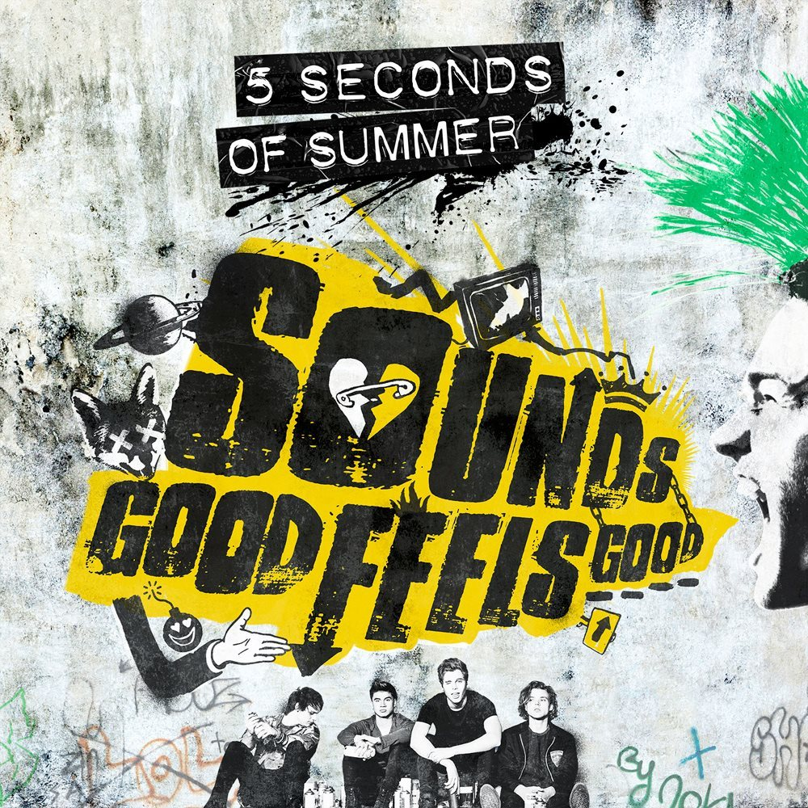

5 Seconds of Summer - Jet Black Heart (Official Video)

Everybody's got their demons
Even wide awake or dreaming
I'm the one who ends up leaving
Make it okay
See a war I wanna fight it
See a match I wanna strike it
Every fire I've ignited
Faded to grey
But now that I'm broken
Now that you know it
Caught up in a moment
Can you see inside?
'Cause I've got a jet black heart
And there's a hurricane underneath it
Trying to keep us apart
I write with a poison pen
But these chemicals moving between us
Are the reason to start again
Now I'm holding on for dear life
There's no way that we could rewind
Maybe there's nothing after midnight
That could make you stay
But now that I'm broken
And now that you know it
Caught up in a moment
Can you see inside?
'Cause I've got a jet black heart
And there's a hurricane underneath it
Trying to keep us apart
I write with a poison pen
But these chemicals moving between us
Are the reason to start again
The blood in my veins
Is made up of mistakes
Let's forget who we are
And dive into the dark
As we burst into color
Returning to life
'Cause I've got a jet black heart
And there's a hurricane underneath it
Trying to keep us apart
I write with a poison pen
But these chemicals moving between us
Are the reason to start again
The blood in my veins
Is made up of mistakes
(To start again)
Let's forget who we are
And dive into the dark